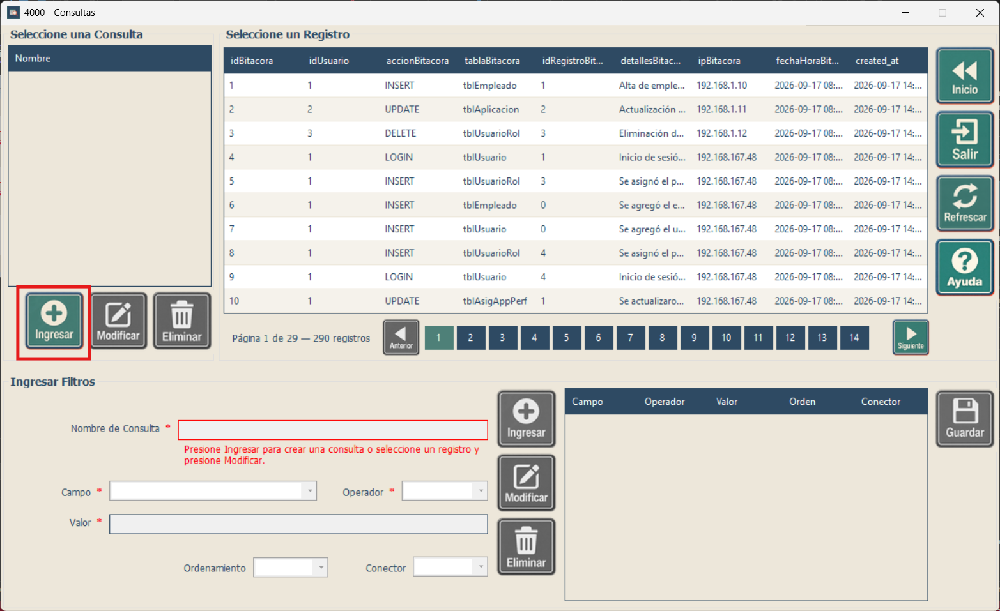
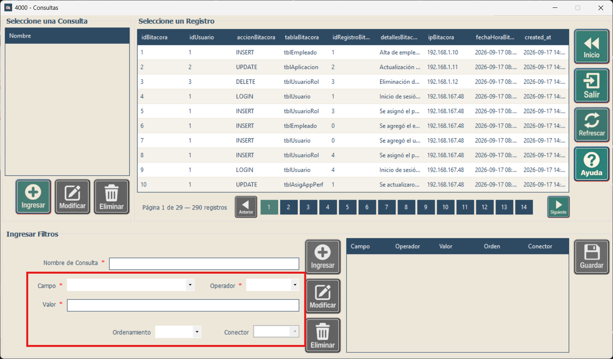
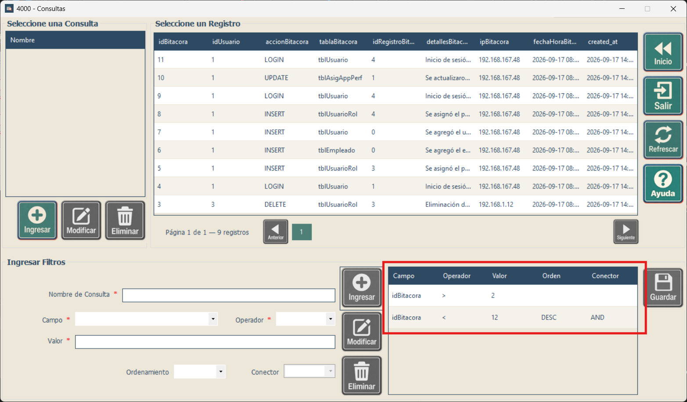
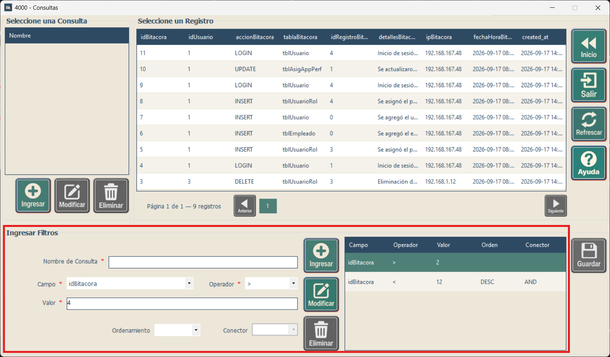
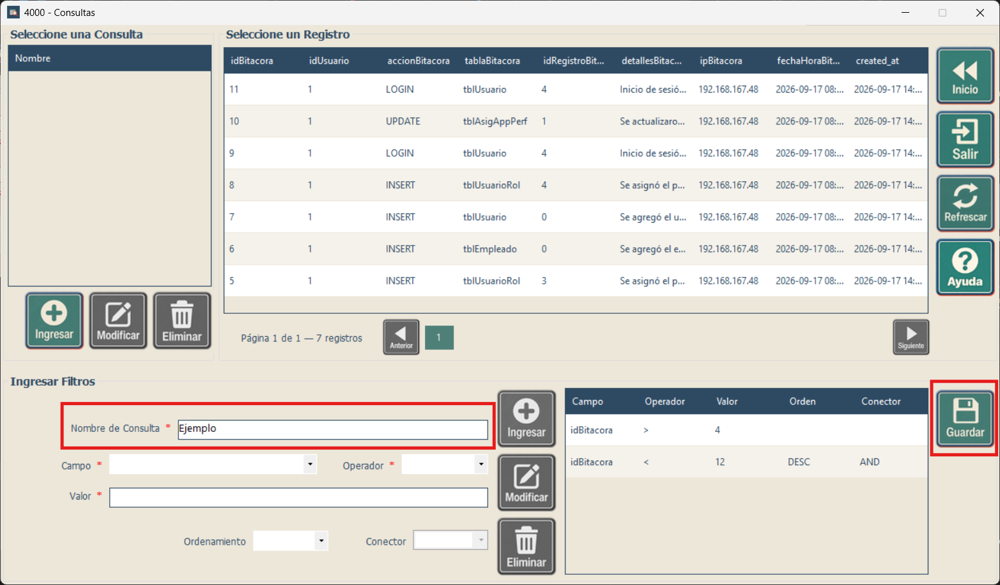
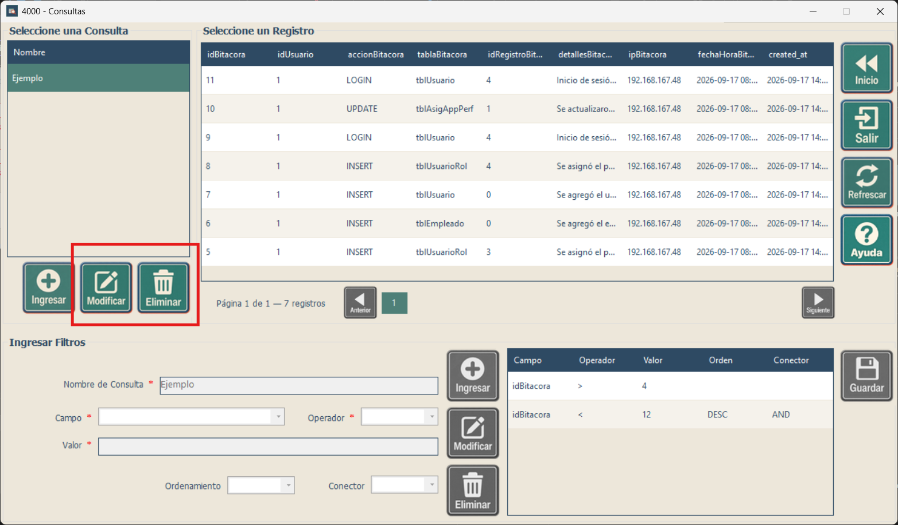
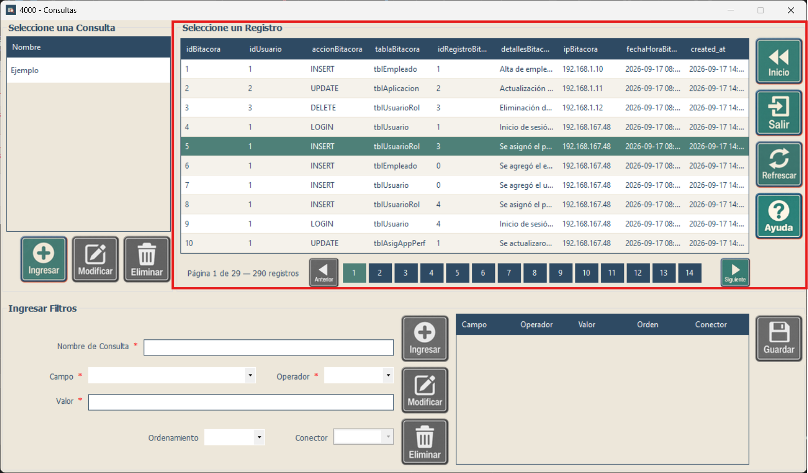

Capacitación - Consultas
Uso de consultas complejas y consultas reutilizables
Uso de consultas complejas y consultas reutilizables
Ver la guía de consultas simples
Use esta pantalla cuando necesite combinar varias condiciones, ordenar resultados o guardar una búsqueda para repetirla después. Puede abrirla con Consultas Complejas desde la búsqueda simple.
Una consulta guardada conserva un nombre y unas condiciones de búsqueda. Cuando la vuelve a ejecutar, obtiene los datos disponibles en ese momento; no es una copia fija de los resultados anteriores.

| Zona | Para qué sirve |
|---|---|
| Seleccione una Consulta, arriba a la izquierda | Lista los nombres de búsquedas guardadas. Los botones Ingresar, Modificar y Eliminar que están debajo actúan sobre una consulta completa. |
| Seleccione un Registro, arriba a la derecha | Muestra los resultados. La paginación está debajo de esta tabla. |
| Ingresar Filtros, parte inferior | Permite escribir el nombre y preparar Campo, Operador, Valor, Ordenamiento y Conector. |
| Tabla de filtros, abajo a la derecha | Muestra las condiciones ya agregadas, con columnas Campo, Operador, Valor, Orden y Conector. En algunos avisos se llama Mantenimiento. |
Presione Ingresar debajo de la lista Seleccione una Consulta, en el lado izquierdo. Se habilitará la zona de filtros para preparar una búsqueda nueva.
Si se le pregunta si desea descartar el contenido actual, elija No para conservarlo y guardarlo primero. Elija Sí solamente si desea comenzar de nuevo.


Para continuar el ejemplo, agregue una segunda condición: Campo: idBitacora, Operador: <, Valor: 12, Ordenamiento: DESC y Conector: AND. Presione Ingresar en el grupo de filtros.
La búsqueda mostrará identificadores mayores que 2 y menores que 12, ordenados de mayor a menor. Si el sistema le solicita un conector después de presionar Ingresar, seleccione AND u OR y vuelva a presionar Ingresar para agregar la fila.

AND significa que deben cumplirse las dos condiciones. Por ejemplo, Edad mayor o igual que 18 AND Estado igual a Activo muestra únicamente personas adultas activas. OR significa que basta con una de las condiciones: Estado igual a Activo OR Estado igual a Pendiente admite cualquiera de esos dos estados.

Use Ingresar para agregar una fila distinta y Modificar para reemplazar la seleccionada. Si la consulta ya estaba guardada, estos ajustes todavía deben confirmarse con Guardar para conservarlos para la próxima vez.



Si desea terminar sin elegir un registro, presione Salir o cierre la ventana. El dato confirmado anteriormente en la pantalla de origen se conserva. Guarde las condiciones que desee reutilizar antes de cerrar.
| Control | Uso |
|---|---|
| Campo | Columna sobre la que se aplica el filtro u ordenamiento. Cambiarla borra Valor y actualiza los operadores. |
| Operador | Texto: =, <>, Contiene, Comienza con y Termina con. Números y fechas: =, <>, >, <, >= y <=. Booleanos: = y <>. Consulte los ejemplos en Consultas simples. |
| Valor | Dato que se compara. Use enteros sin decimales, punto decimal (125.50), fechas aaaa-MM-dd o dd/MM/aaaa, fecha y hora con HH:mm:ss, horas HH:mm:ss y booleanos 1, 0, true o false. Respete la longitud máxima del campo de texto. |
| Ordenamiento | ASC ordena de menor a mayor; DESC, de mayor a menor. Puede combinarlo con un filtro o crear una fila solo de ordenamiento: seleccione Campo, deje Operador vacío y elija ASC o DESC. Esa fila no requiere Valor ni Conector. |
| Conector | AND exige que se cumplan ambas condiciones; OR admite cualquiera de ellas. El primer filtro no lleva conector. Al combinar ambos, AND tiene prioridad sobre OR; la pantalla no permite agregar paréntesis. |
Ejemplo: Edad >= 18 y Estado = Activo con AND busca personas adultas activas. Nombre Comienza con Mar busca nombres como María o Marcos. Un ordenamiento ASC por Nombre presenta los nombres en orden ascendente.
| Botón o control | Función |
|---|---|
| Ingresar (consulta) | Inicia una consulta nueva y limpia el mantenimiento actual. Confirme el descarte cuando se solicite. |
| Modificar (consulta) | Carga la consulta seleccionada y habilita su edición. |
| Ingresar (filtro) | Agrega una nueva fila a Mantenimiento. Si parte de una fila seleccionada, cambie algún dato antes de ingresarla como nueva; para reemplazarla use Modificar. |
| Modificar (filtro) | Reemplaza la fila seleccionada con los datos de los controles. |
| Eliminar (filtro) | Quita la fila seleccionada y actualiza la vista previa. La primera fila de Mantenimiento no se puede eliminar; puede modificarla. |
| Guardar Consulta | Guarda una consulta nueva o los cambios de la consulta en edición. Requiere nombre y entre 1 y 100 filas de condiciones u ordenamientos. |
| Eliminar Consulta | Elimina la definición seleccionada en la lista izquierda después de confirmar. Si hay una sesión de edición, la confirmación también advierte que se descartará. |
| Refrescar | Recarga el catálogo y los datos sin filtros, limpia Mantenimiento y vuelve al estado inicial. Durante una edición solicita confirmar el descarte. |
| Inicio | Regresa a la pantalla de consultas simples. Guarde antes la consulta si desea reutilizarla después. |
| Ayuda / Salir | Abre la ayuda o solicita cerrar la ventana actual. |
| Anterior / Siguiente / páginas | Recorre los resultados, con 10 registros por página. Los controles se habilitan según las páginas disponibles. |
Haga clic en el encabezado de una columna de resultados para ordenar y vuelva a hacer clic para alternar la dirección. Haga doble clic en una fila de resultados o selecciónela y presione Enter para devolver ese registro a la pantalla que abrió Consultas.
Los errores de nombre se muestran debajo de Nombre de Consulta; los errores de filtros y los avisos sin resultados, debajo de Valor. Revise campo, operador, formato y conectores antes de volver a intentar.
| Situación | Cómo continuar |
|---|---|
| Campo, Valor o Guardar no están disponibles. | Inicie una consulta con Ingresar debajo de la lista izquierda, o seleccione una consulta y use Modificar en ese mismo grupo. Complete el nombre y agregue al menos una fila antes de guardar. |
| El sistema pide AND u OR. | Elija cómo debe unirse el nuevo filtro con los anteriores y vuelva a presionar Ingresar junto a los filtros. |
| El nombre está vacío, es demasiado largo o ya existe. | Escriba un nombre de 1 a 50 caracteres. Para una búsqueda nueva, use uno distinto; si pretende cambiar una existente, ábrala con Modificar. |
| No hay resultados. | Revise todas las condiciones, especialmente los límites numéricos, las fechas y los conectores. Con AND, cada registro debe cumplir ambas condiciones. Ajuste un filtro y vuelva a revisar la vista previa. |
| No puede eliminar la primera fila de filtros. | Seleccione esa fila y cambie sus datos con Modificar. Para rehacer toda la consulta, use Ingresar debajo de la lista izquierda y acepte el descarte únicamente si ya no necesita las condiciones actuales. |
| Se pregunta si desea descartar la edición. | Responda No para conservarla y guarde primero si la necesita. Sí descarta el contenido indicado en el aviso. |
| La selección de un registro muestra un aviso de identificador o llave primaria. | La fila no se confirma. Comunique el mensaje a la persona encargada del sistema y no sustituya el registro por otro sin comprobarlo. |
| Una consulta antigua no se puede editar o abrir. | Lea el aviso. Si se permite corregir la condición, use un operador disponible. Si la consulta no puede abrirse, solicite apoyo para revisarla o cree una búsqueda nueva con los filtros que necesita. |
Para una búsqueda con una sola condición, consulte la guía de consultas simples.